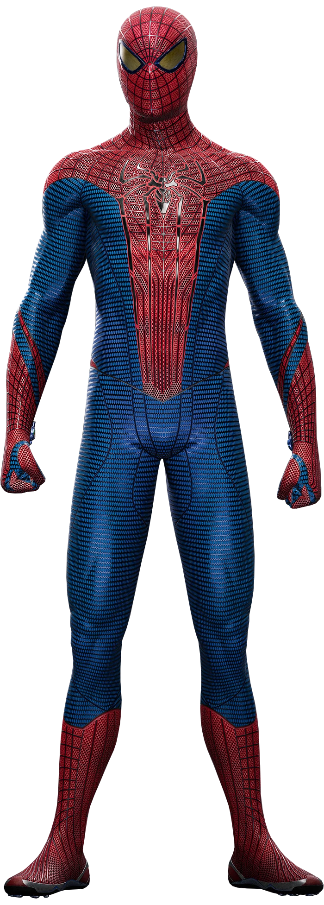
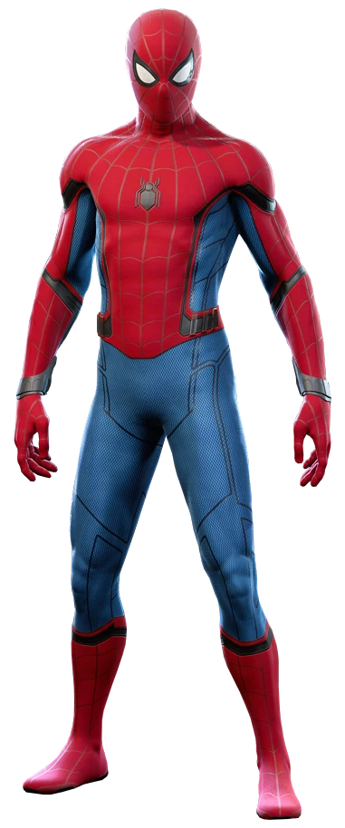
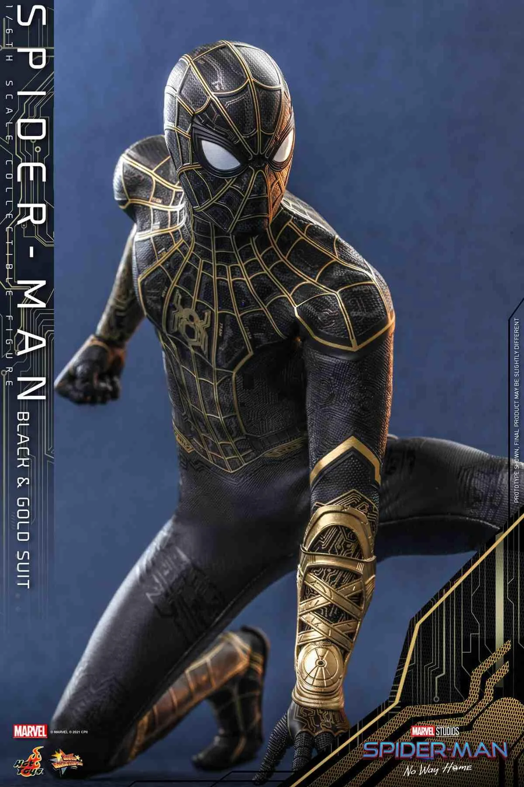

Spider-Man Suits(Costumes)!
Spider-Man have used different cool suits. Here are some of his best suits of all time.
Original Suit
 The suit's overall design is based primarily on the Classic Suit,
but with several modifications. Notably, the red portions of the suit are lined with raised silver webbing and the eyes are more angular. Additionally, the red
spider symbol on the back of the suit is that of a realistic spider rather than a stylized circular symbol as on the Classic Suit and the other variants based off
of it. The red sections of the suit are also colored in a much stronger shade of red as compared to the other variations of the Classic Suit. And unlike most suits,
this suit lacks the shutter eyes, staying true to its appearance in the film trilogy.
The suit's overall design is based primarily on the Classic Suit,
but with several modifications. Notably, the red portions of the suit are lined with raised silver webbing and the eyes are more angular. Additionally, the red
spider symbol on the back of the suit is that of a realistic spider rather than a stylized circular symbol as on the Classic Suit and the other variants based off
of it. The red sections of the suit are also colored in a much stronger shade of red as compared to the other variations of the Classic Suit. And unlike most suits,
this suit lacks the shutter eyes, staying true to its appearance in the film trilogy.
Amazing Suit

The Amazing Suit heavily resembles the classic suit in colour design. As such, it possesses a blue and red scheme, with red covering the torso, legs, feet and back
while blue surrounds the upper legs and hips. However, it also has black outlines along its body and face with the eye lenses tinted like sunglasses to give them a
reflective style.
Stark Suit

The Stark Suit bears a strong resemblance to the Classic Suit, with the red and blue color scheme. The suit also includes some black highlights in addition to the
expressive shutters on the eye lenses.
Black and Gold Suit

The Black and Gold Suit is partially based on the Stark Suit, and shares similarities to Fear Itself Suit being a fully equipped variant of Peter's Classic Suit (Repaired),
and Miles Morales' Uptown Pride Suit being a black and gold variant of his Classic Suit.